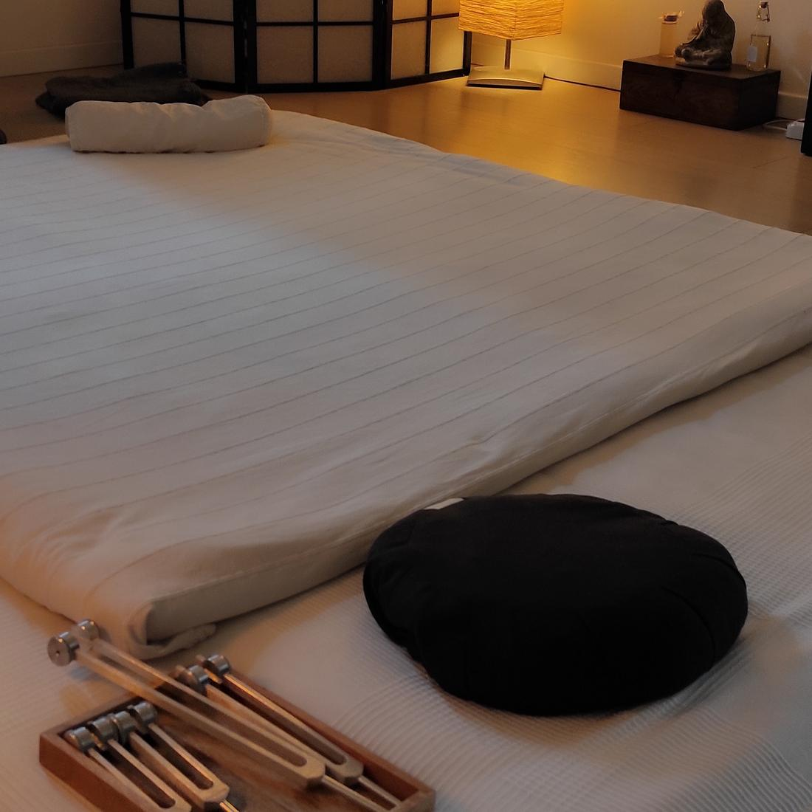

Naturopatia e Shiatsu a Solarolo
Un primo incontro di circa 90 minuti, con consulenza naturopatica e Shiatsu, per leggere la persona secondo la Medicina Tradizionale Cinese anche in base alla stagione. In questa tradizione l’inverno è la stagione dell’Acqua, legata al Rene, alle ossa e alle riserve di energia.
Operatore Shiatsu dal 2004, socio APOS. Si riceve su prenotazione.

L’inverno appartiene all’Acqua, e all’Acqua corrispondono il Rene, le ossa e le riserve profonde di energia, il Jing.
È la stagione dell’interno e del riposo. Si consumano meno energie e si lascia che le riserve si ricostituiscano per la primavera.
Il Rene teme il freddo. Per questo in inverno si tengono al caldo la parte bassa della schiena e i piedi, e si sceglie un’alimentazione calda e cotta.
Prima dell’appuntamento c’è una breve telefonata. L’incontro dura circa 90 minuti e ha tre momenti.
Si parte da ciò che ha portato la persona in studio. Poi ci si allarga al sonno, alla parte emotiva e allo stile di vita. Serve a leggere il quadro nel suo insieme secondo la Medicina Tradizionale Cinese.
Si fa a terra, su un futon, restando vestiti. Si agisce lungo i meridiani con il peso del corpo e non con la forza dei muscoli, seguendo ciò che le mani incontrano. Nella tradizione orientale serve a favorire la circolazione del Qi e a riequilibrare le zone troppo piene o troppo vuote.
A seconda di ciò che emerge, possono essere indicati fiori di Bach o fiori australiani, integratori a base di erbe e cambiamenti da portare avanti, letti dal punto di vista energetico.
Costi e modalità si comunicano al primo contatto, a voce o per messaggio.
Solarolo (RA), a 10-20 minuti da Faenza, Imola, Lugo e Castel Bolognese.
Si riceve solo su prenotazione.
Basta un messaggio su WhatsApp, oppure il numero lasciato dal modulo. Poi arriva la telefonata.
Le informazioni di questa pagina hanno scopo informativo. Shiatsu e consulenza naturopatica non sostituiscono il parere del medico, né diagnosi o terapie mediche.